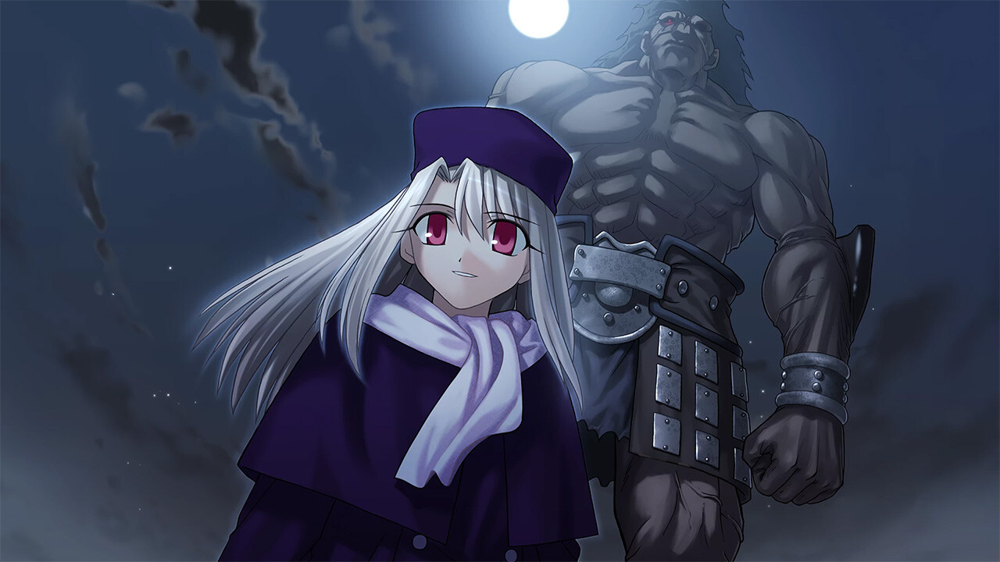

Illustrations
A story full of mystery and action.
Filled with a well-written large cast of characters.

With heroes that everyone knows, and ones that not many do.
An introspective on what makes a hero, and what it means to be human.
"Rejoice, Emiya Shirou. Your wish will finally come true."
-Kotomine Kirei, Priest